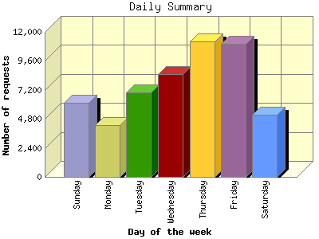
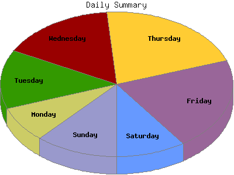

Analog 6.0
Analog 6.0 Report Magic 2.21
Report Magic 2.21The Daily Summary identifies the level of activity as a total for each day of the week. This summary also compares the level of activity on weekdays and weekends as a total for the report time frame.


| Day of the week | Number of requests | Percentage of the requests | |
|---|---|---|---|
| 1. | Sunday | 6,111 | 11.49% |
| 2. | Monday | 4,279 | 8.04% |
| 3. | Tuesday | 6,998 | 13.15% |
| 4. | Wednesday | 8,506 | 15.99% |
| 5. | Thursday | 11,199 | 21.05% |
| 6. | Friday | 10,979 | 20.64% |
| 7. | Saturday | 5,130 | 9.64% |
| Total Weekdays | 41,961 | 78.87% | |
| Total Weekend | 11,241 | 21.13% | |
This report was generated on July 5, 2009 11:22.
Report time frame November 4, 2008 08:13 to July 4, 2009 23:06.
| Web statistics report produced by: | |
| Analog 6.0 | Report Magic 2.21 |